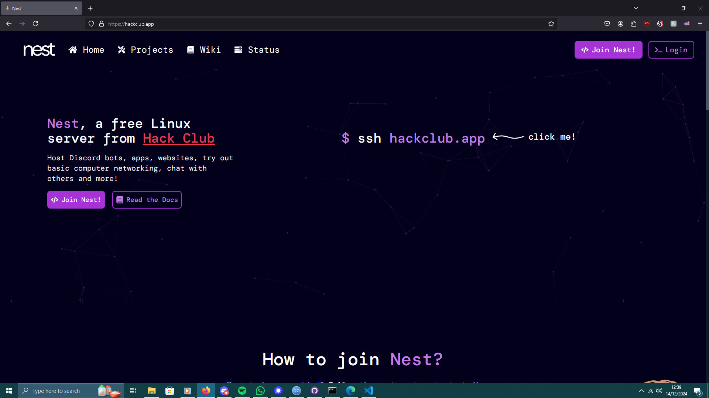
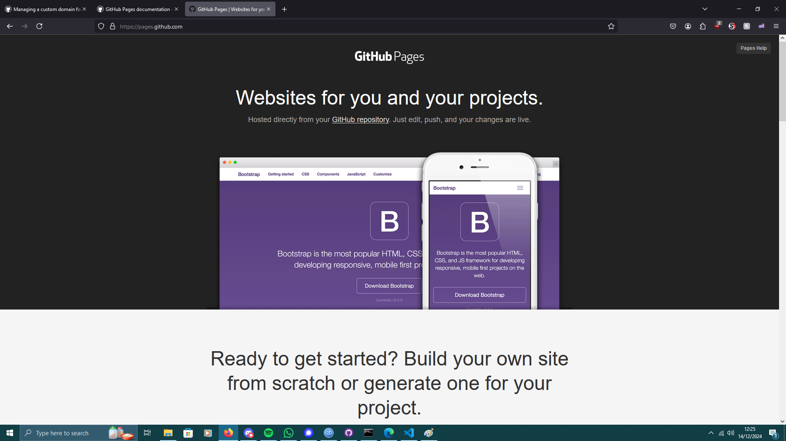
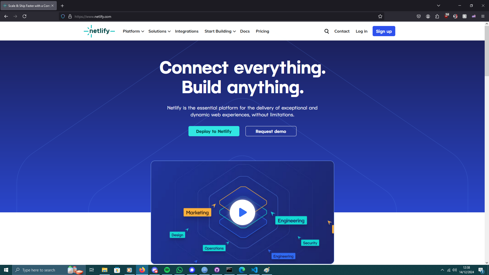
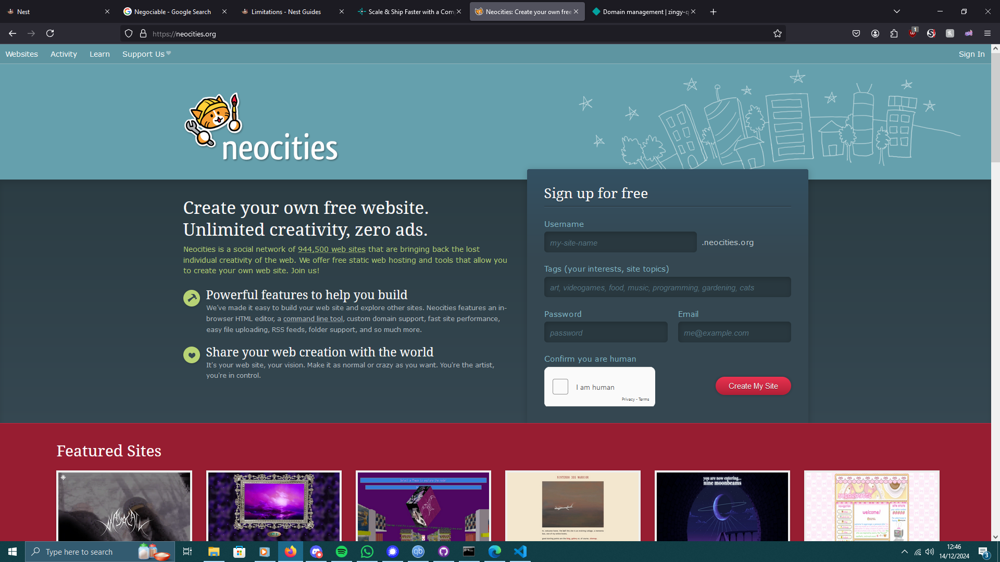

I recently discovered that attaching videos negatively impacts your voting prospects, resulting in less doubloons! Reading the rest of this page could result in you getting more cool gear - for FREE!
To get more doubloons, you want to host a web demo! Here's some free tools for this!
The number one method for hosting your ships for High Seas is Nest - from Hack Club!

Nest:
✅Free page hosting
✅No file type limits
✅Negotiable 15gb of total storage
✅No bandwidth limits
✅Free domain - [user].hackclub.app
✅Add your own domains for free
✅Link to Git repositories
✅SSH access
❌No sudo access - as it's shared!
Another great option for developers like us is GitHub Pages - from GitHub!

GitHub Pages
✅Free page hosting
✅No file type limits
✅No storage size limit
✅No bandwidth limits
✅Free domain - [user].github.io
✅Add your own domains for free
✅Link to GitHub repositories
❌No terminal access
A good GitHub Sites alternative is Netlify!

Netlify
✅Free page hosting
✅No file type limits
✅No storage size limit
❌100gb/month bandwidth limit
✅Free domain - [configurable].netlify.app
✅Add your own domains for free
✅Link to Git repositories
❌No terminal access
If you're making a retro-themed personal site, Neocities might be for you!

Neocities
✅Free page hosting
❌File sizes are limited to the bare necesities for non-supporters
❌1gb of total storage
❌200gb/month bandwidth limit
✅Free domain - [user].neocities.org
❌Custom domains are for supporters only!
❌No Git respository support
❌No terminal access
If none of these four look good to you, don't worry! Here's EVEN MORE options:
that's the name
Vercel
pages.gay
This informational page was brought to you by Eve!